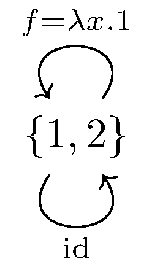

January 26th
$\renewcommand{\AA}{\mathbb A} \newcommand{\RR}{\mathbb R} \newcommand{\ZZ}{\mathbb Z} \newcommand{\NN}{\mathbb N} \newcommand{\QQ}{\mathbb Q} \newcommand{\CC}{\mathbb C} \newcommand{\FF}{\mathbb F} \newcommand{\PP}{\mathbb P} \newcommand{\e}{\varepsilon} \newcommand{\ball}[2]{(#1-#2,\,#1+#2)} \newcommand{\floor}[1]{\left\lfloor{#1}\right\rfloor} \newcommand{\ceil}[1]{\left\lceil{#1}\right\rceil} \newcommand{\norm}[1]{\left\lVert{#1}\right\rVert} \newcommand{\diff}{\operatorname{diff }} \newcommand{\disc}{\operatorname{disc }} \newcommand{\ord}{\text{ord}} \newcommand{\lcm}{\text{lcm}} \newcommand{\del}{\partial} \newcommand{\emp}{\varnothing} \newcommand{\divides}{\,|\,} \newcommand{\op}[1]{\operatorname{#1}} \newcommand{\mf}[1]{\mathfrak{#1}} \newcommand{\mc}[1]{\mathcal{#1}} \newcommand{\sgn}{\operatorname{sgn}} \newcommand{\refl}{\op{refl}} \newcommand{\UU}{\mathcal{U}} $Today I learned a (contrived) example of a function which is both epic and monic but neither injective or surjective. The main idea is that epic and monic only work for injectivity and surjectivity when we have enough functions to witness elements, so to break this, we limit our functions.
Namely, we consider the following category with $2$ objects and $3$ morphisms.
For convenience, we fix $X=\{1,2\}$ and $Y=\{3,4\}.$ We can verify manually that this is a category. We have $2$ objects and $3$ morphisms, two of which are the required identity mappings. Here is the function composition table; we use $-$ to signify that the domain does not match the codomain. (Left is left is input to $\circ$; top is right input.)\[\begin{array}{c|ccc} \circ & \op{id}_X & \op{id}_Y & f \\\hline \op{id}_X & \op{id}_X & - & -\\ \op{id}_Y & - & \op{id}_Y & f\\ f & f & - & -\end{array}\]This associates because they're functions on sets. Alternatively, this is by brute force: the identity vacuously associates with every function by erasing the identity, and any string of compositions we can make in this category has at most one non-identity function because there is only one non-identity function, and it cannot compose with itself. And finally, the identity behaves with $f$ as seen in the table.
To show that $f$ is monic and epic, we again proceed by brute force. For monic, we are interested in maps $Z\to X$ for an object $Z$ in our category. However, $Z=Y$ doesn't matter because there are no maps in this direction, so we are forced into $Z=X,$ and our only morphism $X\to X$ is $\op{id}_X.$ So we merely have to check that\[f\circ\op{id}_X=f\circ\op{id}_X\implies\op{id}_X=\op{id}_X,\]which is true without having to look at $f.$
Epic is similar. We are interested in maps $Y\to Z$ for an object $Z.$ However, $Z=X$ doesn't matter because there are no maps in this direction, so we are forced into $Z=Y,$ and our only morphism $Y\to Y$ is $\op{id}_Y.$ So we merely have to check that\[\op{id}_Y\circ f=\op{id}_Y\circ f\implies\op{id}_Y=\op{id}_Y,\]which is again true without having to look at $f.$
It remains to show that $f$ is neither injective nor surjective. Well, $f$ is not surjective because no $x\in X$ gives $f(x)=d,$ and $f$ is not injective because $1\ne 2$ but $f(1)=3=f(2).$ This completes the proof.
I guess there are two follow-up questions to this example. The most obvious is if there are non-contrived examples. I suspect there are, but I haven't spent very long looking; I know that Vakil has some examples. Alternatively, we can ask if there is a simpler/more contrived example.
I don't think the category can get any simpler with $2$ objects, but it might be possible with just $1.$ The identity moprhism will be bijective, so we will need at least $2$ morphisms. The issue, now, is that the second morphism will be able to compose with itself, so some care is needed in checking, so maybe this is not as simple. For example, the following does not work.
Namely, $f^\bullet=f,$ breaking both monic and epic. In fact, no finite set will be able to work for our object because $\op{Mor}(S,S)$ is finite in \texttt{Set}, so $f^\bullet=f$ eventually.